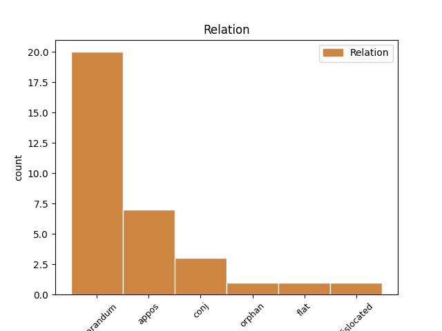
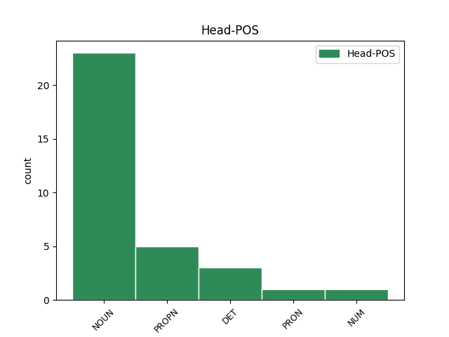
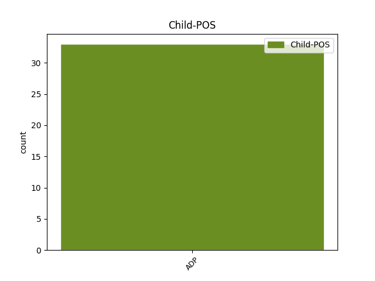

Distribution of features within this leaf



Agreement Rules sorted by frequency.
- When the dependent token is the overridden disfluency(reparandum) of the head token, and the head token is NOUN and the dependent token is ADP.
1 ja _ _ _ _ 0 _ _ _
2 [gap] _ _ _ _ 0 _ _ _
3 s z ADP Si Case=Ins 6 reparandum _ msd=Do|word=s
4 copati _ _ _ _ 0 _ _ _
5 s _ _ _ _ 0 _ _ _
6 copati copat NOUN Ncmpi Case=Ins|Gender=Masc|Number=Plur 0 _ _ _
7 [gap] _ _ _ _ 0 _ _ _
1 [gap] _ _ _ _ 0 _ _ _
2 pa _ _ _ _ 0 _ _ _
3 izhajata _ _ _ _ 0 _ _ _
4 iz _ _ _ _ 0 _ _ _
5 logarske _ _ _ _ 0 _ _ _
6 doline dolina NOUN Ncfsg Case=Gen|Gender=Fem|Number=Sing 0 _ _ _
7 iz iz ADP Sg Case=Gen 6 appos _ msd=Dr|word=iz
8 solčave _ _ _ _ 0 _ _ _
9 [name:personal] _ _ _ _ 0 _ _ _
10 pa _ _ _ _ 0 _ _ _
11 [name:personal] _ _ _ _ 0 _ _ _
1 iskalnik _ _ _ _ 0 _ _ _
2 je _ _ _ _ 0 _ _ _
3 po _ _ _ _ 0 _ _ _
4 krajih _ _ _ _ 0 _ _ _
5 po _ _ _ _ 0 _ _ _
6 imenih _ _ _ _ 0 _ _ _
7 po _ _ _ _ 0 _ _ _
8 po _ _ _ _ 0 _ _ _
9 po _ _ _ _ 0 _ _ _
10 po _ _ _ _ 0 _ _ _
11 ukrepih _ _ _ _ 0 _ _ _
12 ne _ _ _ _ 0 _ _ _
13 in _ _ _ _ 0 _ _ _
14 tam _ _ _ _ 0 _ _ _
15 lahko _ _ _ _ 0 _ _ _
16 če _ _ _ _ 0 _ _ _
17 greste _ _ _ _ 0 _ _ _
18 na _ _ _ _ 0 _ _ _
19 ukrep _ _ _ _ 0 _ _ _
20 ne _ _ _ _ 0 _ _ _
21 pogledate _ _ _ _ 0 _ _ _
22 eee _ _ _ _ 0 _ _ _
23 k _ _ _ _ 0 _ _ _
24 [gap] _ _ _ _ 0 _ _ _
25 j _ _ _ _ 0 _ _ _
26 [gap] _ _ _ _ 0 _ _ _
27 recimo _ _ _ _ 0 _ _ _
28 pasivna _ _ _ _ 0 _ _ _
29 hiša _ _ _ _ 0 _ _ _
30 je _ _ _ _ 0 _ _ _
31 se _ _ _ _ 0 _ _ _
32 vam _ _ _ _ 0 _ _ _
33 odprejo _ _ _ _ 0 _ _ _
34 primeri _ _ _ _ 0 _ _ _
35 pasivne _ _ _ _ 0 _ _ _
36 hiše _ _ _ _ 0 _ _ _
37 eee _ _ _ _ 0 _ _ _
38 v v ADP Sl Case=Loc 41 reparandum _ msd=Dm|word=v
39 eee _ _ _ _ 0 _ _ _
40 v _ _ _ _ 0 _ _ _
41 sloveniji Slovenija PROPN Npfsl Case=Loc|Gender=Fem|Number=Sing 0 _ _ _
42 ne _ _ _ _ 0 _ _ _
1 in _ _ _ _ 0 _ _ _
2 mi _ _ _ _ 0 _ _ _
3 smo _ _ _ _ 0 _ _ _
4 potem _ _ _ _ 0 _ _ _
5 od _ _ _ _ 0 _ _ _
6 aaa _ _ _ _ 0 _ _ _
7 februarja _ _ _ _ 0 _ _ _
8 dva _ _ _ _ 0 _ _ _
9 tisoč _ _ _ _ 0 _ _ _
10 štiri _ _ _ _ 0 _ _ _
11 naprej _ _ _ _ 0 _ _ _
12 rotirali _ _ _ _ 0 _ _ _
13 v _ _ _ _ 0 _ _ _
14 jordaniji Jordanija PROPN Npfsl Case=Loc|Gender=Fem|Number=Sing 0 _ _ _
15 v v ADP Sl Case=Loc 14 appos _ msd=Dm|word=v
16 centru _ _ _ _ 0 _ _ _
17 oziroma _ _ _ _ 0 _ _ _
18 operaciji _ _ _ _ 0 _ _ _
19 jiptc _ _ _ _ 0 _ _ _
20 eee _ _ _ _ 0 _ _ _
21 določeno _ _ _ _ 0 _ _ _
22 število _ _ _ _ 0 _ _ _
23 policistov _ _ _ _ 0 _ _ _
24 vsako _ _ _ _ 0 _ _ _
25 leto _ _ _ _ 0 _ _ _
26 enkrat _ _ _ _ 0 _ _ _
27 pa _ _ _ _ 0 _ _ _
28 se _ _ _ _ 0 _ _ _
29 o _ _ _ _ 0 _ _ _
30 tem _ _ _ _ 0 _ _ _
31 v _ _ _ _ 0 _ _ _
32 naši _ _ _ _ 0 _ _ _
33 javnosti _ _ _ _ 0 _ _ _
34 sploh _ _ _ _ 0 _ _ _
35 nismo _ _ _ _ 0 _ _ _
36 pogovarjali _ _ _ _ 0 _ _ _
1 ja _ _ _ _ 0 _ _ _
2 pa _ _ _ _ 0 _ _ _
3 ne _ _ _ _ 0 _ _ _
4 zase zase PRON Px---a--b Case=Acc|PronType=Prs|Variant=Bound 0 _ _ _
5 za za ADP Sa Case=Acc 4 conj _ msd=Dt|word=za
6 Franc _ _ _ _ 0 _ _ _
7 [gap] _ _ _ _ 0 _ _ _
1 a _ _ _ _ 0 _ _ _
2 zdaj _ _ _ _ 0 _ _ _
3 pa _ _ _ _ 0 _ _ _
4 še _ _ _ _ 0 _ _ _
5 za _ _ _ _ 0 _ _ _
6 [gap] _ _ _ _ 0 _ _ _
7 za _ _ _ _ 0 _ _ _
8 za _ _ _ _ 0 _ _ _
9 [gap] _ _ _ _ 0 _ _ _
10 izpite _ _ _ _ 0 _ _ _
11 za _ _ _ _ 0 _ _ _
12 fonetiko _ _ _ _ 0 _ _ _
13 za _ _ _ _ 0 _ _ _
14 kaj _ _ _ _ 0 _ _ _
15 za za ADP Sa Case=Acc 17 flat _ msd=Dt|word=za
16 celo _ _ _ _ 0 _ _ _
17 dva dva NUM Mlcmda Case=Acc|Gender=Masc|Number=Dual|NumForm=Word|NumType=Card 0 _ _ _
18 tisoč _ _ _ _ 0 _ _ _
19 deset _ _ _ _ 0 _ _ _
20 enajst _ _ _ _ 0 _ _ _
1 eee _ _ _ _ 0 _ _ _
2 poleg poleg ADP Sg Case=Gen 8 reparandum _ msd=Dr|word=poleg
3 one _ _ _ _ 0 _ _ _
4 ta _ _ _ _ 0 _ _ _
5 glavne _ _ _ _ 0 _ _ _
6 … _ _ _ _ 0 _ _ _
7 poleg _ _ _ _ 0 _ _ _
8 one oni DET Pd-fsg Case=Gen|Gender=Fem|Number=Sing|PronType=Dem 0 _ _ _
9 ki _ _ _ _ 0 _ _ _
10 je _ _ _ _ 0 _ _ _
11 ki _ _ _ _ 0 _ _ _
12 je _ _ _ _ 0 _ _ _
13 bila _ _ _ _ 0 _ _ _
14 najbolj _ _ _ _ 0 _ _ _
15 in _ _ _ _ 0 _ _ _
Disagree Examples:
1 ja _ _ _ _ 0 _ _ _
2 e _ _ _ _ 0 _ _ _
3 [gap] _ _ _ _ 0 _ _ _
4 če _ _ _ _ 0 _ _ _
5 smo _ _ _ _ 0 _ _ _
6 že _ _ _ _ 0 _ _ _
7 prvega _ _ _ _ 0 _ _ _
8 mentorja _ _ _ _ 0 _ _ _
9 uvedli _ _ _ _ 0 _ _ _
10 [gap] _ _ _ _ 0 _ _ _
11 eee _ _ _ _ 0 _ _ _
12 omenili _ _ _ _ 0 _ _ _
13 ne _ _ _ _ 0 _ _ _
14 to _ _ _ _ 0 _ _ _
15 je _ _ _ _ 0 _ _ _
16 bil _ _ _ _ 0 _ _ _
17 eee _ _ _ _ 0 _ _ _
18 zlatko _ _ _ _ 0 _ _ _
19 verzelak _ _ _ _ 0 _ _ _
20 eee _ _ _ _ 0 _ _ _
21 sem _ _ _ _ 0 _ _ _
22 potem _ _ _ _ 0 _ _ _
23 naslednje _ _ _ _ 0 _ _ _
24 leto leto NOUN Ncnsa Case=Acc|Gender=Neut|Number=Sing 0 _ _ _
25 ko _ _ _ _ 0 _ _ _
26 je _ _ _ _ 0 _ _ _
27 ta _ _ _ _ 0 _ _ _
28 skupina _ _ _ _ 0 _ _ _
29 tu _ _ _ _ 0 _ _ _
30 razpadla _ _ _ _ 0 _ _ _
31 v v ADP Sl Case=Loc 24 dislocated _ msd=Dm|word=v
32 bistrici _ _ _ _ 0 _ _ _
33 sodeloval _ _ _ _ 0 _ _ _
34 z _ _ _ _ 0 _ _ _
35 enim _ _ _ _ 0 _ _ _
36 eee _ _ _ _ 0 _ _ _
37 lutkovnim _ _ _ _ 0 _ _ _
38 režiserjem _ _ _ _ 0 _ _ _
39 in _ _ _ _ 0 _ _ _
40 tudi _ _ _ _ 0 _ _ _
41 bivšim _ _ _ _ 0 _ _ _
42 direktorjem _ _ _ _ 0 _ _ _
43 lutkovnega _ _ _ _ 0 _ _ _
44 gledališča _ _ _ _ 0 _ _ _
45 maribor _ _ _ _ 0 _ _ _
46 gospodom _ _ _ _ 0 _ _ _
47 bojanom _ _ _ _ 0 _ _ _
48 čebuljem _ _ _ _ 0 _ _ _
49 na _ _ _ _ 0 _ _ _
50 ptuju _ _ _ _ 0 _ _ _
1 pol _ _ _ _ 0 _ _ _
2 je _ _ _ _ 0 _ _ _
3 pa _ _ _ _ 0 _ _ _
4 ona _ _ _ _ 0 _ _ _
5 ki _ _ _ _ 0 _ _ _
6 je _ _ _ _ 0 _ _ _
7 tudi _ _ _ _ 0 _ _ _
8 z z ADP Si Case=Ins 12 reparandum _ msd=Do|word=z
9 š _ _ _ _ 0 _ _ _
10 [gap] _ _ _ _ 0 _ _ _
11 za _ _ _ _ 0 _ _ _
12 zaščito zaščita NOUN Ncfsa Case=Acc|Gender=Fem|Number=Sing 0 _ _ _
13 živali _ _ _ _ 0 _ _ _
14 ki _ _ _ _ 0 _ _ _
15 ima _ _ _ _ 0 _ _ _
16 prav _ _ _ _ 0 _ _ _
17 mačke _ _ _ _ 0 _ _ _
18 čez _ _ _ _ 0 _ _ _
1 vam _ _ _ _ 0 _ _ _
2 bom _ _ _ _ 0 _ _ _
3 takoj _ _ _ _ 0 _ _ _
4 vam _ _ _ _ 0 _ _ _
5 bom _ _ _ _ 0 _ _ _
6 povedal _ _ _ _ 0 _ _ _
7 ja _ _ _ _ 0 _ _ _
8 v v ADP Sa Case=Acc 9 reparandum _ msd=Dt|word=v
9 to ta DET Pd-nsn Case=Nom|Gender=Neut|Number=Sing|PronType=Dem 0 _ _ _
10 so _ _ _ _ 0 _ _ _
11 povezave _ _ _ _ 0 _ _ _
12 ja _ _ _ _ 0 _ _ _
13 ampak _ _ _ _ 0 _ _ _
14 bova _ _ _ _ 0 _ _ _
15 videla _ _ _ _ 0 _ _ _
16 bova _ _ _ _ 0 _ _ _
17 en _ _ _ _ 0 _ _ _
18 pojem _ _ _ _ 0 _ _ _
19 našla _ _ _ _ 0 _ _ _
1 mislim _ _ _ _ 0 _ _ _
2 da _ _ _ _ 0 _ _ _
3 ne _ _ _ _ 0 _ _ _
4 vem _ _ _ _ 0 _ _ _
5 takrat _ _ _ _ 0 _ _ _
6 v v ADP Sl Case=Loc 15 orphan _ msd=Dm|word=v
7 dolarjih _ _ _ _ 0 _ _ _
8 zdaj _ _ _ _ 0 _ _ _
9 si _ _ _ _ 0 _ _ _
10 bom _ _ _ _ 0 _ _ _
11 izmislila _ _ _ _ 0 _ _ _
12 primerjavo _ _ _ _ 0 _ _ _
13 za _ _ _ _ 0 _ _ _
14 dvajset _ _ _ _ 0 _ _ _
15 dolarjev dolar NOUN Ncmpg Case=Gen|Gender=Masc|Number=Plur 0 _ _ _
16 ampak _ _ _ _ 0 _ _ _
17 nisi _ _ _ _ 0 _ _ _
18 je _ _ _ _ 0 _ _ _
19 mogel _ _ _ _ 0 _ _ _
20 prenesti _ _ _ _ 0 _ _ _
21 ven _ _ _ _ 0 _ _ _
22 čez _ _ _ _ 0 _ _ _
23 mejo _ _ _ _ 0 _ _ _
24 ne _ _ _ _ 0 _ _ _
1 [speaker:laughter] _ _ _ _ 0 _ _ _
2 herman _ _ _ _ 0 _ _ _
3 ja _ _ _ _ 0 _ _ _
4 [audience:laughter] _ _ _ _ 0 _ _ _
5 je _ _ _ _ 0 _ _ _
6 bil _ _ _ _ 0 _ _ _
7 pri _ _ _ _ 0 _ _ _
8 njih _ _ _ _ 0 _ _ _
9 doma _ _ _ _ 0 _ _ _
10 ne _ _ _ _ 0 _ _ _
11 pol _ _ _ _ 0 _ _ _
12 pa _ _ _ _ 0 _ _ _
13 je _ _ _ _ 0 _ _ _
14 rekel _ _ _ _ 0 _ _ _
15 d _ _ _ _ 0 _ _ _
16 [gap] _ _ _ _ 0 _ _ _
17 vem _ _ _ _ 0 _ _ _
18 da _ _ _ _ 0 _ _ _
19 pač _ _ _ _ 0 _ _ _
20 ona _ _ _ _ 0 _ _ _
21 ženska _ _ _ _ 0 _ _ _
22 gor _ _ _ _ 0 _ _ _
23 ne _ _ _ _ 0 _ _ _
24 eee _ _ _ _ 0 _ _ _
25 v v ADP Sl Case=Loc 26 reparandum _ msd=Dm|word=v
26 njegova njegov DET Ps3fsnsm Case=Nom|Gender=Fem|Gender[psor]=Masc|Number=Sing|Number[psor]=Sing|Person=3|Poss=Yes|PronType=Prs 0 _ _ _
27 žena _ _ _ _ 0 _ _ _
28 ne _ _ _ _ 0 _ _ _
29 štiri _ _ _ _ 0 _ _ _
30 ure _ _ _ _ 0 _ _ _
31 gor _ _ _ _ 0 _ _ _
32 na _ _ _ _ 0 _ _ _
33 facebooku _ _ _ _ 0 _ _ _
34 ne _ _ _ _ 0 _ _ _
35 pa _ _ _ _ 0 _ _ _
36 da _ _ _ _ 0 _ _ _
37 [audience:laughter] _ _ _ _ 0 _ _ _
38 ima _ _ _ _ 0 _ _ _
39 poslikano _ _ _ _ 0 _ _ _
40 bajto _ _ _ _ 0 _ _ _
41 okoli _ _ _ _ 0 _ _ _
42 in _ _ _ _ 0 _ _ _
43 okoli _ _ _ _ 0 _ _ _
44 ne _ _ _ _ 0 _ _ _